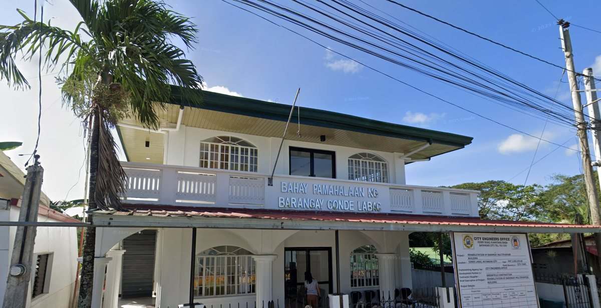

Official Digital Portal · Batangas City
C.A.R.E.S. Conde lAbak REsident System
The official service platform of Barangay Conde Labac — request certificates, file blotter reports, explore the community GIS map, and reach your barangay from anywhere.

Citizen Services
How can the barangay help you today?
Transact with Barangay Conde Labac without lining up at the hall.
-
Certificate Issuance
Request clearances, indigency, residency & more
Ready for pickup in 1–3 working days
-
Blotter Reporting
File an incident report for complaints or concerns
An official contacts you within 24 hours
-
Feedback
Share comments and suggestions on barangay services
Reviewed monthly by barangay officials
Accounts are required for most services. Claim an account to track your requests
How it works
Three steps, no queue
-
Choose a service
Pick a service above. It opens right here on the page — nothing to download or install.
-
Fill in your details
Give your name, purok and purpose. For an incident, drop a pin on the map where it happened.
-
Get notified
Barangay staff review your request and notify you when it is ready or acted upon.
Geographic Information System
Community GIS Map
Explore households, hazard zones, roads, and community concerns across Barangay Conde Labac. Toggle the layers to view specific datasets on the interactive map.
- Every mapped household and building in the barangay
- Roads, waterways and vegetation as base layers
- Community concerns and incident pins filed by residents
- Names and household classifications stay private on this public view
Community Bulletin
Latest Announcements
Advisories, events, and community updates from the barangay.
Leadership
Barangay Officials
The current elected officials serving Barangay Conde Labac.
Get in touch
Visit or call the barangay hall
Walk-in transactions, document pickup, and anything the portal cannot settle online are handled at the hall during office hours.
- Barangay Hall, Conde Labac, Batangas City
- 043-702-8875
- condelabac@batangascity.gov.ph
- Monday–Friday · 8:00 AM – 5:00 PM